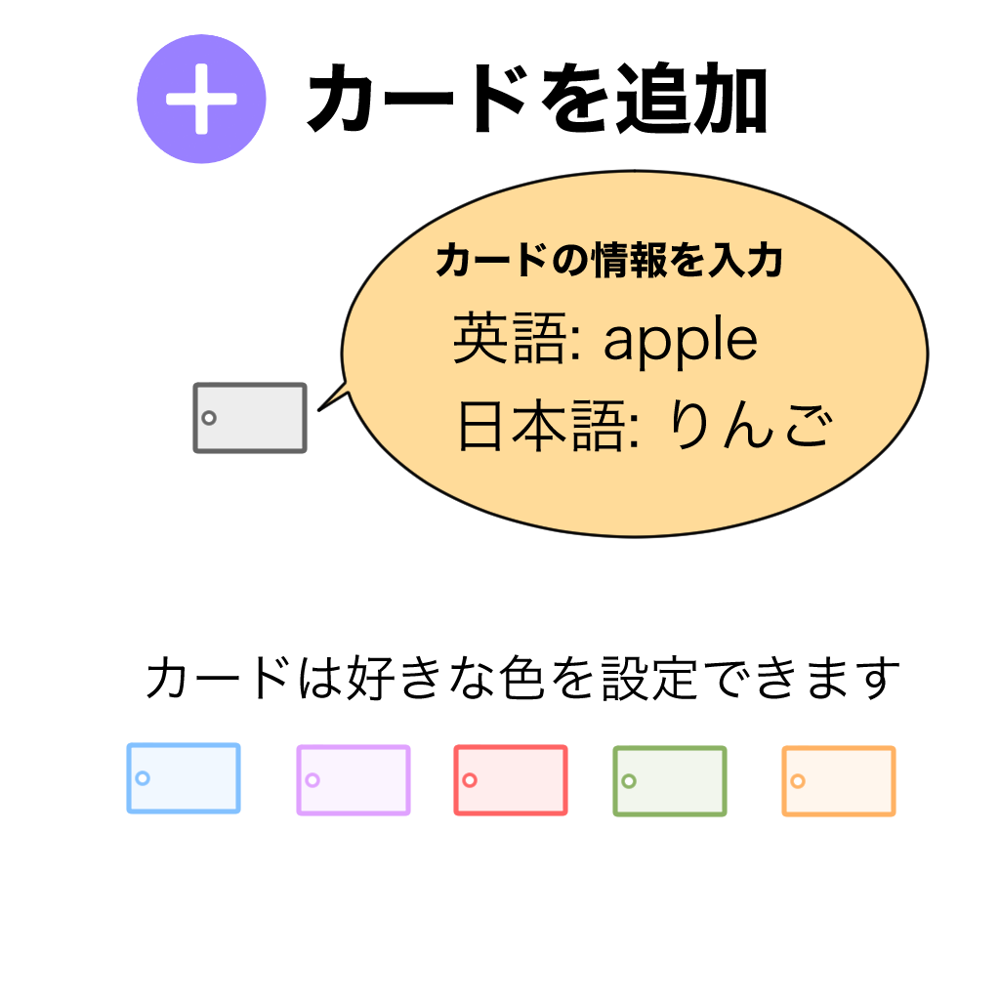
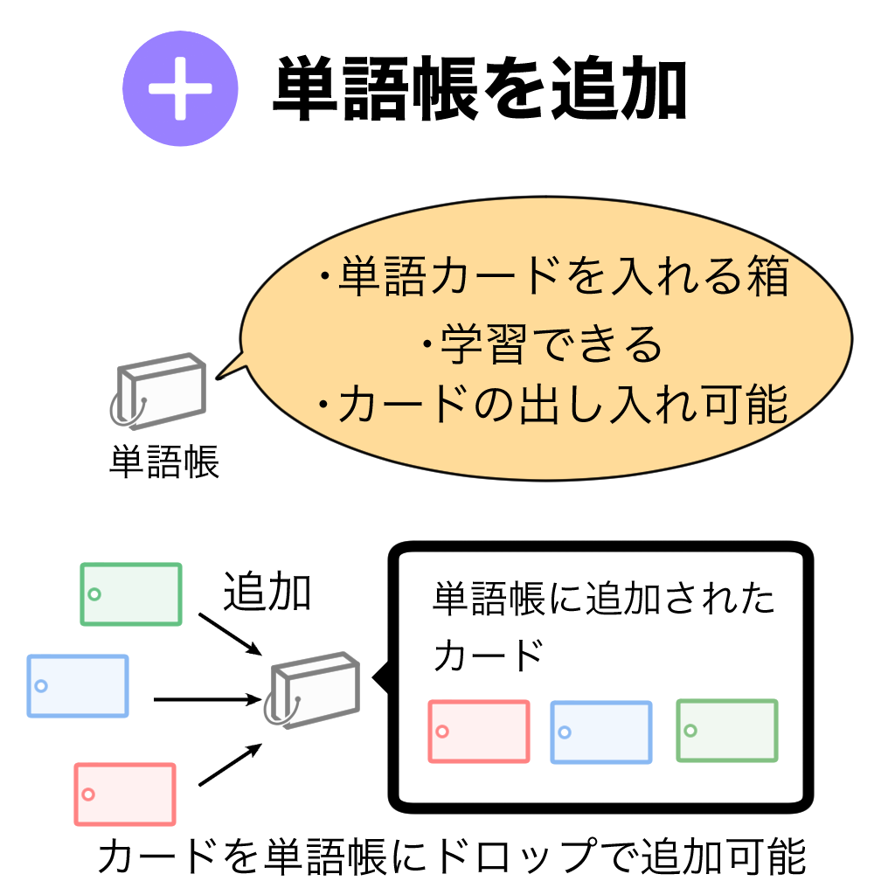
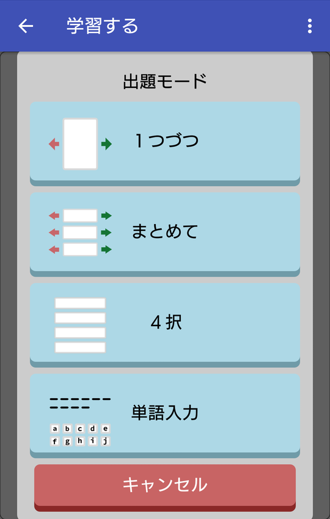

お手軽操作で簡単に単語帳を作成できます。
単語帳作成ページから単語帳を作成して、そこに単語カードを追加していくだけです。
単語帳のカードはドラッグ＆ドロップで他の単語帳に移動することができます。
カードを追加したい場合は「カードの追加」と「カードの情報入力」の２ステップでできます。
単語帳を追加したい場合は「単語帳の追加」と「単語帳の情報入力」の２ステップでできます。
実際の単語帳と同じようにカードをめくって覚える方法や、４択から正解を選ぶ、英語のスペルを入力する方法があります。 好きな方法で単語を覚えられます。
モード１
１枚ずつカードを確認します。
知っているカードは右に、知らないカードは左にスライドしてOK/NGの判定を自分で行います。
モード２
まとめて複数のカードを確認します。
知っているカードは右に、知らないカードは左にスライドしてOK/NGの判定を自分で行います。
モード３
４択で正解のカードを選択します。
自分で知っている/知らない判定を行えない場合はこのモードが使えます。
モード４
英語のスペルを１つずつタッチしていきます。スペルを覚えたい時に有効です。